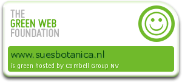

Jouw duurzame bloemist
Duurzame bloemist nodig? Dan zit je bij Sue’s Botanica goed! Ik ben namelijk erg actief op het gebied van MVO en probeer op zoveel mogelijk vlakken een steentje bij te dragen aan onze planeet. Op deze pagina vertel ik graag meer over wat dat precies inhoudt en hoe ik dat doe.
Een duurzame bloemist, wat houdt dat in?
Op dit moment doen zich een heleboel maatschappelijke problemen voor, zoals klimaatverandering, milieuvervuiling, verminderde biodiversiteit en uitbuiting. Een duurzame bloemist houdt rekening met de effecten die het vak heeft op de samenleving. Ik probeer dus om de maatschappelijke problemen die al bestaan niet erger te maken, maar positief te beïnvloeden. Dit doe ik door bewuste keuzes te maken bij het inkopen, verkopen, produceren en adverteren. Ook de sociale aspecten, zoals het aanbieden van goede arbeidsomstandigheden, vormen een belangrijk aandachtspunt.
Mijn duurzaamheidsbeleid
Hieronder vind je een overzicht van alle stappen die ik tot nu toe heb gezet om zoveel mogelijk rekening te houden met mens, dier en natuur.
Boeketten
- Als duurzame bloemist probeer ik zoveel mogelijk bloemen in te kopen met het MPSA+ keurmerk.
- Daarnaast probeer ik om minstens 10% aan biologische bloemen in te kopen.
- Ik gebruik geen gewaxte, beglitterde, of geverfde bloemen en takken in mijn bloemwerk vanwege de milieuvervuiling die eraan gepaard gaat.
- Al mijn boeketten worden ingepakt in ongebleekt bruin inpakpapier dat FSC-gecertificeerd is.
- Het snijbloemenvoedsel dat ik meegeef draagt het Fair Trade keurmerk.
- De boeketten worden vastgebonden met ongebleekt jute touw, een 100% natuurijk materiaal.
- De kaartjes die ik aan mijn bloemen hang zijn van gerecycled papier gemaakt. De inkt die ik gebruik is op waterbasis.
- Al mijn leveranciers zijn net zo actief met MVO bezig als ik.
Verpakking
- De dozen waarin de boeketten verstuurd worden zijn van FSC-gecertificeerd karton gemaakt.
- De dozen worden dichtgeplakt met papieren tape. Hierdoor kan de verpakking 100% gerecycled worden. Maar uiteraard kan je ze ook hergebruiken.
- Het bekertje waarin het boeket staat is gemaakt van landbouwafval en daarom 100% biologisch afbreekbaar.
- In de boeketten heb ik een bamboestok verwerkt. Deze stok zet het boeket klem in de doos, waardoor het boeket niet beschadigd raakt als de doos op zijn kop wordt gehouden. Deze is 100% biologisch afbreekbaar.
Facilitair
- Ik scheid al mijn groen-, plastic-, papier- en restafval.
- Ik doe alles zoveel mogelijk digitaal. Hierbij moet je denken aan het versturen van facturen en nieuwsbrieven. Ook de marketing doe ik zoveel mogelijk online om papierverspilling tegen te gaan.
- Ik bankier bij de Triodosbank. Een van de duurzaamste banken van Nederland. Kijk hier voor meer informatie over het beleid van de Triodosbank op het gebied van duurzaamheid.
- Deze site wordt gehost door Combell. Zij zijn net als ik ook erg actief op het gebied van MVO.
- Zo draait de server op groene energie.
- Hun servers hebben energiezuinige chips om energieverspilling te voorkomen.
Kijk hier voor meer informatie over het MVO-beleid van Combell.
